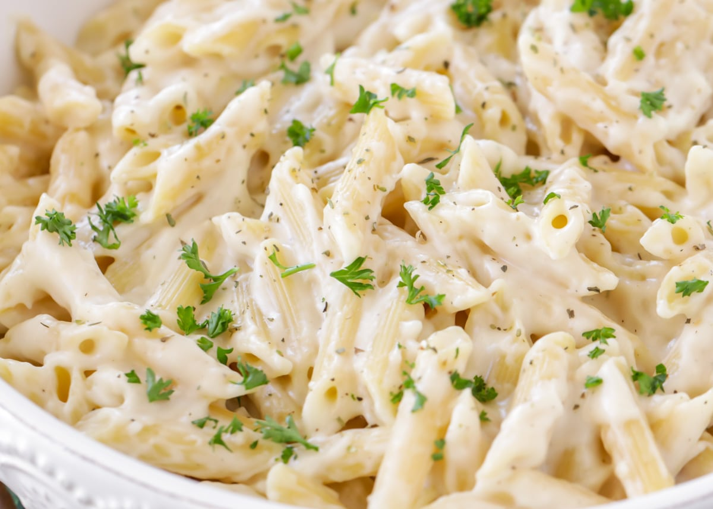

Simple Creamy Pasta Sauce

Ingredients
- Dairy liquid cream (10%+ fat recommended)
- Flour (Wheat flour recommended)
Directions
- Add 1 teaspoon of flour into a saucepan.
- Pour ~60ml(2fl oz|1/4 cup) of cream into a saucepan.
- Stir and turn on maximum heat.
- Keep stirring until it becomes thick. If the sauce is too liquid, add more flour,
if the sauce is too solid (like a uncooked pancake), add more cream.
- Mix the sauce with the pasta.